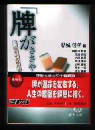

本邦初の麻雀短編小説のアンソロジー（結城信孝編・徳間文庫\590、ISBN4-19-891651-9）。阿佐田哲也ほか、生島治郎、五味康祐など10人の作家の作品が収められている。
各作品について、末尾に編者の結城氏による簡単な解説がついている。しかし肝心の編者自身のプロフィールがない。「著者」ではなく「編者」だから遠慮したのかも知れないが、結城氏はばりばりの文芸評論家。σ(-_-)は高く評価している人。
最近、麻雀小説は、さっぱり出版されていない。単発的に短編小説が活字になっても、どこで発表されたかも分からず、見逃しがちである。そこで、過去にあちこちで発表された短編小説を一度に読めるという、このアンソロジーは貴重といえる。
収録作品の中で、σ（-_-）の一押しは三好徹の「雀鬼」 この作品はむかしから大好きだ。初めて読んだときは、感動したなぁ。
次に好きなのは五味康祐の「雨の日の両筒」 五味氏のたわいのない自慢話だが、とぼけた味が大好き。
横田順弥のハチャメチャ作品「麻雀西遊記」も面白い。いうまでもなく横田氏は、ＳＦ関係の評論では、日本で５本の指に入る人。しかし正直言って横田さんの小説は、アイデアだけで読ませているという感じ。。。。
ま、好みは人様々だけど、値段も590円だし、買っておいて損はない。
|